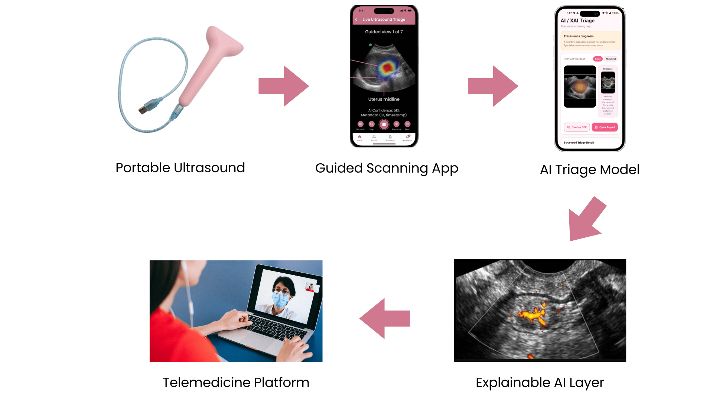

0
Women worldwide are affected by endometriosis
Endora AI is an AI-powered platform for early detection of endometriosis, combining guided ultrasound, explainable AI, and specialist access to deliver faster, more accessible care.
0
Women worldwide are affected by endometriosis
12
Average delay in diagnosis
Experience endometriosis globally

A portable ultrasound probe and AI-powered app that bring faster, accessible screening and specialist care together.

Ayesha, a 21-year-old student, had been living with severe period pain for years but was repeatedly told it was normal. Unsure and frustrated, she used Endora AI and visited a nearby clinic.
With guided ultrasound scanning and AI-assisted analysis, her case was quickly reviewed by a specialist. Within days, she finally received clarity and a care plan, without years of uncertainty.
"Endora helped me understand what I was going through."
Fatima, living in a rural area, had limited access to gynecologists and could not afford frequent hospital visits. Through Endora AI, she visited a local clinic equipped with guided scanning.
Her results were securely shared with a remote specialist, allowing her to receive diagnosis and treatment guidance without leaving her community.
Nadia, a working professional, struggled with chronic pelvic pain but delayed seeking care due to her busy schedule. With Endora AI, she completed a quick screening and booked a remote consultation.
She received expert advice and next steps efficiently, without disrupting her routine.
Sara, unsure about her symptoms, felt uncomfortable discussing them openly. Through Endora's anonymous community, she asked questions and learned from others facing similar challenges.
Encouraged by the support, she moved forward with screening and gained clarity and confidence in her health journey.
"I finally felt heard and understood."
 Square Hospitals Ltd.Clinical pilot and referral-network partner
Square Hospitals Ltd.Clinical pilot and referral-network partner Labaid Specialized HospitalDiagnostic workflow and specialist review partner
Labaid Specialized HospitalDiagnostic workflow and specialist review partner Ibn SinaService-acceptance and care-delivery network
Ibn SinaService-acceptance and care-delivery network BRACCommunity health access and outreach collaboration
BRACCommunity health access and outreach collaboration Sajida FoundationScreening access and social-impact collaboration
Sajida FoundationScreening access and social-impact collaboration Marie Stopes BangladeshWomen’s health distribution partner
Marie Stopes BangladeshWomen’s health distribution partner UNDPDigital health and systems-strengthening partner
UNDPDigital health and systems-strengthening partner UN WomenGender-equity and women’s health support
UN WomenGender-equity and women’s health support WHOStandards-aligned health-system reference partner
WHOStandards-aligned health-system reference partner Startup BangladeshInnovation and venture ecosystem partner
Startup BangladeshInnovation and venture ecosystem partner bKashDigital payment and service-access enabler
bKashDigital payment and service-access enabler ACIHealthcare distribution and market-access partner
ACIHealthcare distribution and market-access partner icddr,bResearch credibility and evidence-support collaboration
icddr,bResearch credibility and evidence-support collaboration GrameenphoneConnectivity and digital-access ecosystem partner
GrameenphoneConnectivity and digital-access ecosystem partner UnileverBrand and awareness collaboration benchmark
UnileverBrand and awareness collaboration benchmark IUTTechnical and innovation ecosystem alignmentSquare Hospitals Ltd.Clinical pilot and referral-network partnerLabaid Specialized HospitalDiagnostic workflow and specialist review partnerIbn SinaService-acceptance and care-delivery networkBRACCommunity health access and outreach collaborationSajida FoundationScreening access and social-impact collaborationMarie Stopes BangladeshWomen’s health distribution partnerUNDPDigital health and systems-strengthening partnerUN WomenGender-equity and women’s health supportWHOStandards-aligned health-system reference partnerStartup BangladeshInnovation and venture ecosystem partnerbKashDigital payment and service-access enablerACIHealthcare distribution and market-access partnericddr,bResearch credibility and evidence-support collaborationGrameenphoneConnectivity and digital-access ecosystem partnerUnileverBrand and awareness collaboration benchmarkIUTTechnical and innovation ecosystem alignment
IUTTechnical and innovation ecosystem alignmentSquare Hospitals Ltd.Clinical pilot and referral-network partnerLabaid Specialized HospitalDiagnostic workflow and specialist review partnerIbn SinaService-acceptance and care-delivery networkBRACCommunity health access and outreach collaborationSajida FoundationScreening access and social-impact collaborationMarie Stopes BangladeshWomen’s health distribution partnerUNDPDigital health and systems-strengthening partnerUN WomenGender-equity and women’s health supportWHOStandards-aligned health-system reference partnerStartup BangladeshInnovation and venture ecosystem partnerbKashDigital payment and service-access enablerACIHealthcare distribution and market-access partnericddr,bResearch credibility and evidence-support collaborationGrameenphoneConnectivity and digital-access ecosystem partnerUnileverBrand and awareness collaboration benchmarkIUTTechnical and innovation ecosystem alignment
A sample ultrasound image captured through Endora AI's guided scanning system.

AI highlights areas of interest to support faster and clearer interpretation.

Reference ultrasound image used for comparison and validation.